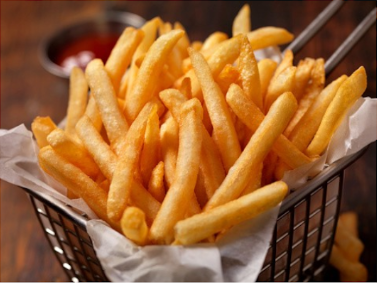

Patatas fritas
Receta de patatas fritas caseras.

Ingredientes
3 o 4 patatas (300 g.)
4 dientes de ajo
Aceite de oliva
Sal
Elaboración (Pasos)
Calentar aceite en una sarten.
Añadir las patatas cortas, la sal y los ajos.
Freir al gusto.
Servir plato.